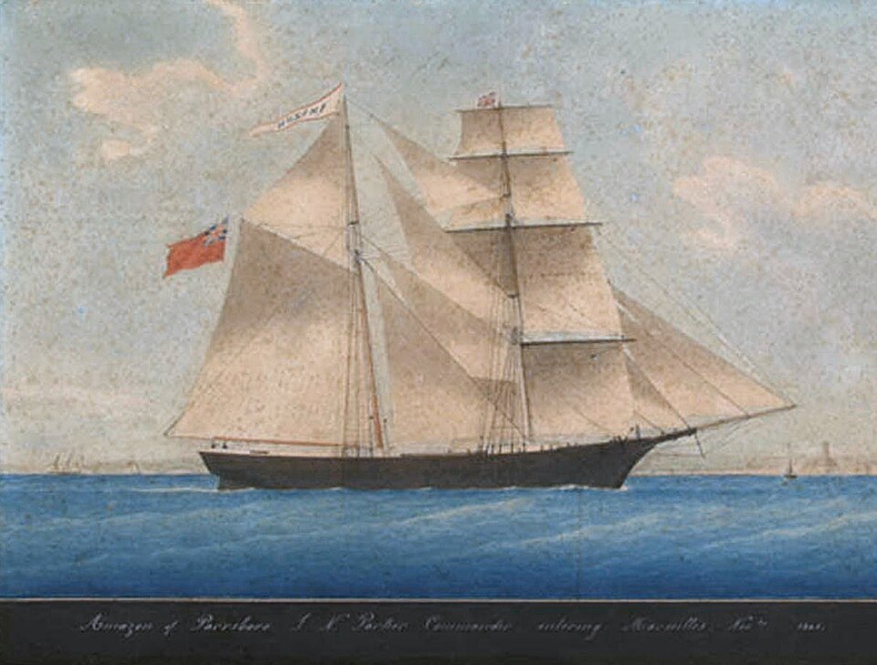

DOSSIER M01 // ATLANTIC // 1872
Mary Celeste: the abandoned brigantine
[ MARITIME & GEOGRAPHIC MYSTERIES // SHIP ]


Event and chronology
The brigantine Mary Celeste sailed from New York for Genoa on 7 November 1872 with Captain Benjamin Briggs, his family and crew. On 4 December the Dei Gratia found her under partial sail near the Azores; the vessel was seaworthy, but the people and one lifeboat were gone. A Gibraltar salvage inquiry followed.
What later accounts allege
Later writers often turn the empty ship into evidence of a sea-zone force, mutiny, piracy, or a vanished crew. Retellings sometimes say the ship was pristine and food untouched, details that exaggerate or distort the inquiry record.
Records, searches and conditions
The Vice-Admiralty Court examined the salvage claim, vessel condition and testimony; the surviving inquiry record describes water in the hold, a missing boat and navigational instruments, not proof of a violent attack. The ship had recently carried denatured alcohol, a cargo capable of producing fumes, but a specific explosion scenario remains conjecture.
Independent and contrary evidence
The brigantine was not found mysteriously destroyed: it reached Gibraltar and was inspected. No reliable evidence established an attack, and later accounts have added details absent from contemporary testimony. A precautionary evacuation amid concern about water, cargo vapour or instruments is more economical than paranormal disappearance, without being proven.
What remains unknown
No crew member’s fate is known from the surviving record, and the exact reason for leaving a floating vessel remains unresolved. The court proceedings are partial, and the crew’s private decisions are inaccessible; missing persons do not establish an extraordinary cause.
Assessment
The abandonment is documented; its immediate trigger is not. The paranormal and conspiracy readings are unsupported by the evidentiary record. A newly located contemporaneous log, authenticated survivor account or physical evidence directly linking a specific event to the abandonment would materially revise this assessment.
Sources and limits
- Dalhousie Archives — Mary Celeste 1872 Gibraltar salvage hearingArchival copy of the contemporary salvage hearing; it records vessel condition and testimony, not the crew’s final decision.
- UK National Archives — ADM 106/1732, Mary Celeste inquiryCatalog record for the Gibraltar inquiry file; it identifies the primary record but is not the full file.
- David Williams — The Mary Celeste: An Unsolved Mystery from the History of the SeaNamed historical study compares inquiry evidence with later retellings; it cannot restore missing crew testimony.